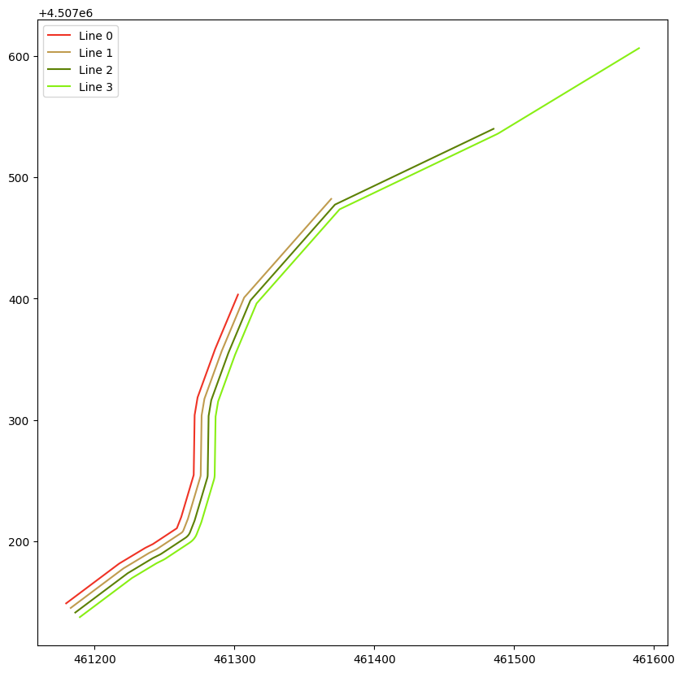

Codice
from shapely import wkt
from matplotlib import pyplot as plt
import random20 novembre 2022
Mettiamo il caso che abbiamo una lista di linee: come troviamo quella meno lunga?
Per raggiungere l’obiettivo userò shapely, matplotlib e random; queste ultime due le ho usate solo per motivi di rappresentazione grafica dei dati.
Userò in questo piccolo esercizio quattro linee, ma dobbiamo immaginarci di essere di fronte alla generica situazione in cui abbiamo una lista di N linee e non possiamo di certo metterci a misurarle tutte.
line_0 = wkt.loads('LINESTRING (461179.6655721677 4507148.788223281, 461217.56786209624 4507181.537033379, 461236.3280996226 4507194.537878151, 461241.7247760045 4507197.640095252, 461258.8379542616 4507210.660701941, 461261.9432857035 4507219.791508417, 461270.90091201715 4507254.590010401, 461271.56385885156 4507303.918307676, 461273.67536588735 4507318.460376316, 461286.2322009634 4507358.346460313, 461302.55653224624 4507403.197152592, 461365.2492823085 4507485.060388609, 461480.4983426857 4507548.512415529, 461580.7367309019 4507618.493483591)')
line_1 = wkt.loads('LINESTRING (461179.6655721677 4507148.788223281, 461217.56786209624 4507181.537033379, 461236.3280996226 4507194.537878151, 461241.7247760045 4507197.640095252, 461258.8379542616 4507210.660701941, 461261.9432857035 4507219.791508417, 461270.90091201715 4507254.590010401, 461271.56385885156 4507303.918307676, 461273.67536588735 4507318.460376316, 461286.2322009634 4507358.346460313, 461302.55653224624 4507403.197152592)')
line_2 = wkt.loads('LINESTRING (461179.6655721677 4507148.788223281, 461217.56786209624 4507181.537033379, 461236.3280996226 4507194.537878151, 461241.7247760045 4507197.640095252, 461258.8379542616 4507210.660701941, 461261.9432857035 4507219.791508417, 461270.90091201715 4507254.590010401, 461271.56385885156 4507303.918307676, 461273.67536588735 4507318.460376316, 461286.2322009634 4507358.346460313, 461302.55653224624 4507403.197152592, 461365.2492823085 4507485.060388609)')
line_3 = wkt.loads('LINESTRING (461179.6655721677 4507148.788223281, 461217.56786209624 4507181.537033379, 461236.3280996226 4507194.537878151, 461241.7247760045 4507197.640095252, 461258.8379542616 4507210.660701941, 461261.9432857035 4507219.791508417, 461270.90091201715 4507254.590010401, 461271.56385885156 4507303.918307676, 461273.67536588735 4507318.460376316, 461286.2322009634 4507358.346460313, 461302.55653224624 4507403.197152592, 461365.2492823085 4507485.060388609, 461480.4983426857 4507548.512415529)')
line_list = [line_0, line_1, line_2, line_3]
fig, ax = plt.subplots(figsize=(10, 10))
for position in range(len(line_list)):
distance = position * 5
color = f'{"%06x" % random.randint(0, 0xFFFFFF)}'
plt.plot(*line_list[position].parallel_offset(distance=distance).xy, label=f'Line {position}', color=f'#{color}')
plt.legend()NB: ho usato parallel_offset solo per motivi grafici. Le linee che ho usato in questo esercizio sono pezzi di una unica linea più lunga che rappresentati sarebbero andati in sovrapposizione nel grafico rendendo impossibile la loro visualizzazione.
Se avessimo solo quattro linee in una lista sarebbe abbastanza semplice capire quale è quella meno lunga:
[656.716578077637, 299.7932485603402, 402.9046946828671, 534.4664886738693]Usando l’attributo length risulta abbastanza immediato capire che la linea più breve è quella in posizione 1 che nemmeno a farlo apposta è line_1. Ma vediamo come possiamo risolvere il caso più generico.
[<shapely.geometry.linestring.LineString at 0x7fe06eebf370>,
<shapely.geometry.linestring.LineString at 0x7fe06eebf430>,
<shapely.geometry.linestring.LineString at 0x7fe06eebf460>,
<shapely.geometry.linestring.LineString at 0x7fe0c0099eb0>]Proprio usando length ho raggiunto lo scopo di questo piccolo articolo. Ho riordinato la lista di linee usando la lambda function in accoppiata con l’attributo visto in precedenza.

'LINESTRING (461179.6655721677 4507148.788223281, 461217.56786209624 4507181.537033379, 461236.3280996226 4507194.537878151, 461241.7247760045 4507197.640095252, 461258.8379542616 4507210.660701941, 461261.9432857035 4507219.791508417, 461270.90091201715 4507254.590010401, 461271.56385885156 4507303.918307676, 461273.67536588735 4507318.460376316, 461286.2322009634 4507358.346460313, 461302.55653224624 4507403.197152592)'Ora noi sappiamo che è la linea in posizione 0, della nuova lista riordinata, ad essere quella meno lunga. Se ne conosci altri, o se hai indicazioni da dare per migliorare il post, fallo scrivendo in Discussioni.
Se vuoi ricevere aggiornamenti sui prossimi articoli iscriviti alla newsletter!
Segui il canale Telegram CaffèGIS - I GIS a supporto dei processi evolutivi territoriali per ricevere aggiornamenti su iniziative ed informazioni a tema GIS.
Se trovi interessanti i miei articoli offrimi una birra!
Alla prossima!